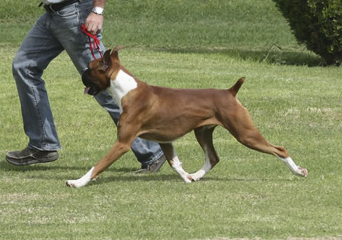
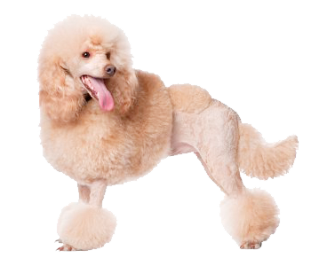
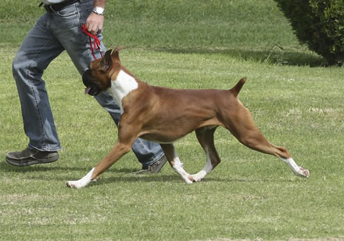
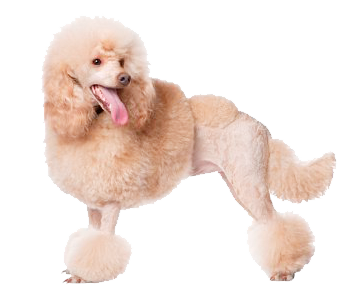

Su mascota deberá estar saludable para iniciar con el servicio de estética; para esto, si en la recepción observamos alguna anomalía se le sugerirá pasar a consulta, en ocasiones, ésta anomalía es observada durante el baño o cepillado, en ese momento nos comunicamos con Ud. Para informarle y sugerirle lo inherente al caso.
Existen ejemplares que por su temperamento no se dejan bañar o cepillar, en este caso, procederemos con una sujeción física, pero si éste, aún así, rehúsa un manejo adecuado, también se le informará para que acuda por él, nunca sedamos o anestesiamos un paciente por concepto de estética, a menos que Ud. nos lo autorice por escrito y el Dr. lo crea así conveniente; en este caso, se programará su sedación y tendrá un trato especial, pues hay que valorar su estado de salud para poder aplicarle cualquier sedante o anestésico.
La presencia exagerada de parásitos en piel como las garrapatas, pueden indicar de urgencia, una transfusión, mas que un baño garrapaticida; por esto es muy importante que sea valorado en la recepción.
Contamos para su comodidad con paquetes especiales de estética canina que buscan la oportunidad de servirles mejor a un precio preferencial: PAQUETE CERCANO, PAQUETE LEJANO Y PAQUETE FORANEO, Estos paquetes toman como referencia su dirección; Si ésta se encuentra entre el circuito y colonias y la nuestra (Av. Reforma,) Ud. Puede solicitar el Paquete Cercano. Si se ubica entre el circuito y colonias y el Periférico, aplicaría el Paquete Lejano. Y por último, si su ubicación esta fuera del periférico (colonias y lugares aledaños al mismo) aplica el Paquete Foráneo. Adicionalmente se firma un contrato donde se anota si Ud. Desea que nosotros les llamemos por teléfono o no. Nos pondremos de acuerdo sobre el horario de recoja y entrega, así como el día del servicio.
Este servicio de estética incluye: El transporte redondo (recoja y entrega), Baño, shampoo, garrapaticida (desparasitación externa), secado, corte de pelo a su elección, limpieza de oídos y sacos anales, lavado del escroto en machos y vulva en hembras, corte de uñas y loción odorizante. NO SE INCLUYE EL DESENREDO, NI EL RAPADO FORZOSO POR PELO ENREDADO. En caso de requerirlo tendrá un costo adicional.
El trato es muy afectivo e influimos en su educación, ya que todos los ejemplares que se atienden se les enseña a bajarse y subirse al transporte con correa, así como aprenden a dejarse bañar, cepillar y secarse. Es una experiencia que nosotros disfrutamos.
Llámenos al 999 9250015 y contrate su Paquete de Estética, su mascota se lo agradecerá